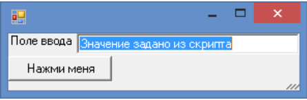
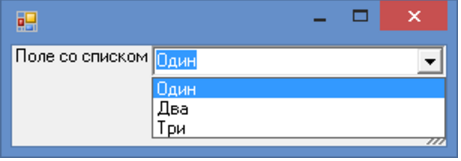
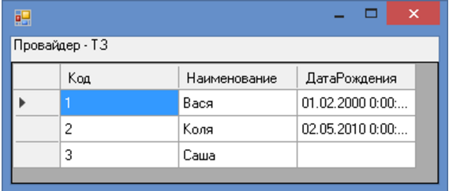
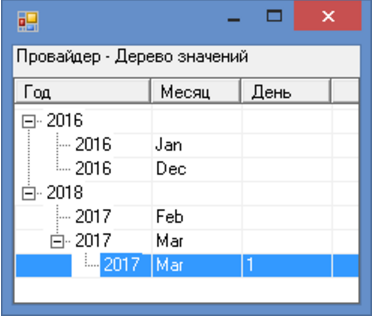

Компонент по созданию форм для 1script
asdfadsf
Внешняя компонента позволяет создавать формы на языке 1script. API работы с формами максимально приближен к синтаксису 1С.
Основная задача компоненты - простая работа с формами. Позволяет создать большое количество разных элементов форм. Поддерижвается обработка событий элементов. Управление свойствами видимости, доступности и другими. Создан единый интерфейс для работы со значениями элементов (через свойство Значение).
Доступны основные элементы формы и события:
Создание формы и вывод надписи
Перем Форма;
Процедура Инициализация()
//# Загружаем внешнюю компоненту
ПодключитьВнешнююКомпоненту(ОбъединитьПути(КаталогПрограммы(), "oscript-simple-gui.dll"));
УправляемыйИнтерфейс = Новый УправляемыйИнтерфейс();
Форма = УправляемыйИнтерфейс.СоздатьФорму();
//# Устанавливаем обработку события ПриОткрытии
Форма.УстановитьДействие(ЭтотОбъект, "ПриОткрытии", "ПриОткрытииФормы");
Форма.Показать();
КонецПроцедуры
//# Обработка события первого открытия формы
Процедура ПриОткрытииФормы() Экспорт
Декорация1 = Форма.Элементы.Добавить("Декорация1", "ПолеФормы", Неопределено);
Декорация1.Вид = Форма.ВидПоляФормы.ПолеНадписи;
Декорация1.Заголовок = "Это действительно работает!";
Форма.Высота = 100;
КонецПроцедуры
Инициализация();
Создание формы с кнопкой и обработка события нажатия на кнопку

Перем Форма;
Процедура Инициализация()
//# Загружаем внешнюю компоненту
ПодключитьВнешнююКомпоненту(ОбъединитьПути(КаталогПрограммы(), "oscript-simple-gui.dll"));
УправляемыйИнтерфейс = Новый УправляемыйИнтерфейс();
Форма = УправляемыйИнтерфейс.СоздатьФорму();
//# Устанавливаем обработку события ПриОткрытии
Форма.УстановитьДействие(ЭтотОбъект, "ПриОткрытии", "ПриОткрытииФормы");
Форма.Показать();
КонецПроцедуры
//# Обработка события первого открытия формы
Процедура ПриОткрытииФормы() Экспорт
ПолеВвода1 = Форма.Элементы.Добавить("ПолеВвода1", "ПолеФормы", Неопределено);
ПолеВвода1.Вид = Форма.ВидПоляФормы.ПолеВвода;
ПолеВвода1.Заголовок = "Поле ввода";
ПолеВвода1.Значение = "Значение задано из скрипта";
Кнопка1 = Форма.Элементы.Добавить("Кнопка1", "КнопкаФормы", Неопределено);
Кнопка1.Заголовок = "Нажми меня";
Кнопка1.УстановитьДействие(ЭтотОбъект, "Нажатие", "ПриНажатииНаКнопку1");
КонецПроцедуры
Процедура ПриНажатииНаКнопку1() Экспорт
Форма.Элементы.Найти("ПолеВвода1").Значение = "Значение после нажатия на кнопку";
КонецПроцедуры
Инициализация();
Пример работы с выпадающим списком

Перем Форма;
Процедура Инициализация()
//# Загружаем внешнюю компоненту
ПодключитьВнешнююКомпоненту(ОбъединитьПути(КаталогПрограммы(), "oscript-simple-gui.dll"));
УправляемыйИнтерфейс = Новый УправляемыйИнтерфейс();
Форма = УправляемыйИнтерфейс.СоздатьФорму();
//# Устанавливаем обработку события ПриОткрытии
Форма.УстановитьДействие(ЭтотОбъект, "ПриОткрытии", "ПриОткрытииФормы");
Форма.Показать();
КонецПроцедуры
//# Обработка события первого открытия формы
Процедура ПриОткрытииФормы() Экспорт
Данные = Новый Соответствие;
Данные.Вставить("Один", "1");
Данные.Вставить("Два", "2");
Данные.Вставить("Три", "3");
ПолеСоСписком1 = Форма.Элементы.Добавить("ПолеСоСписком1", "ПолеФормы", Неопределено);
ПолеСоСписком1.Заголовок = "Поле со списком";
ПолеСоСписком1.Вид = Форма.ВидПоляФормы.ПолеСоСписком;
ПолеСоСписком1.СписокВыбора = Данные;
ПолеСоСписком1.Значение = "3";
ПолеСоСписком1.УстановитьДействие(ЭтотОбъект, "ПриИзменении", "ПриИзменииЗначения");
Форма.Высота = 80;
КонецПроцедуры
Процедура ПриИзменииЗначения() Экспорт
Сообщить("Новое значение: " + Форма.Элементы.Найти("ПолеСоСписком1").Значение);
КонецПроцедуры
Инициализация();

ПровайдерТЗ = Новый Провайдер;
ПровайдерТЗ.Источник = ПолучитьТЗ();
Поле1 = Форма.Элементы.Добавить("ТаблицаФормы1", "ТаблицаФормы", Неопределено);
Поле1.ПутьКДанным = ПровайдерТЗ;
Поле1.Заголовок = "Провайдер - ТЗ";
Поле1.ПоложениеЗаголовка = УправляемыйИнтерфейс.ПоложениеЗаголовка.Верх;
Поле1.Закрепление = 5;

ПровайдерТЗ = Новый Провайдер;
ПровайдерТЗ.ИсточникДерево = Данные;
Поле1 = Форма.Элементы.Добавить("ДеревоФормы1", "ДеревоФормы", Неопределено);
Поле1.ПутьКДанным = ПровайдерТЗ;
Поле1.Заголовок = "Провайдер - Дерево значений";
Поле1.ПоложениеЗаголовка = УправляемыйИнтерфейс.ПоложениеЗаголовка.Верх;
Поле1.Закрепление = 5;
Поле1.ТекущаяСтрока = 1;